Abstract
Urban green space placement strongly influences psychological comfort. Conventional evaluation methods using Green View Index (GVI) remain limited by viewpoint dependence and a lack of visual realism. This study introduces a tree placement optimization method using genetic algorithms (GA) on digital twins built with 3D Gaussian Splatting (3DGS). Unlike mesh or point cloud models, 3DGS reproduces key perceptual features such as foliage overlap and transparency, enabling realistic landscape evaluation from multiple viewpoints.
Three optimization tasks were formulated: (1) maximizing GVI across multiple viewpoints, (2) achieving a distinct target GVI for each viewpoint, and (3) integrating aesthetic evaluation using CLIP. Experiments showed that 10 trees achieved an average GVI of 36.84% and met respective target values (25%, 30%, 40%) within 1% error. Moreover, CLIP-LoRA fine-tuning with a small dataset produced distinct spatial configurations according to prompts such as “dense” and “refreshing,” even at an identical GVI.
Fine-tuning also separated these opposing aesthetic concepts in the embedding space, shifting image–prompt relationships from aligned to strongly negative correlations. This method demonstrates the potential for human-centered landscape design support that integrates quantitative measures with human aesthetic judgment.
1. Introduction
The Green View Index (GVI) quantifies the proportion of visible greenery within the human field of view and plays an important role in evaluating the spatial arrangement of urban green spaces. Unlike overhead green coverage metrics (GCR and CCR), GVI measures greenery from a pedestrian’s eye level, making it a human-centered indicator. Because it has been shown to correlate strongly with psychological comfort and landscape quality, GVI has increasingly been adopted as an evaluation metric in urban planning.
However, arranging trees effectively to enhance greenery visibility remains complex. The relationship between green quantity and comfort is non-linear: excessive greenery can increase stress, and dense vegetation may appear unsafe. Achieving strong visual impact with limited trees, therefore, requires efficient placement strategies.
Tree placement optimization using genetic algorithms (GA) has been explored to address this complexity. Yet most studies rely on numerical indicators such as pedestrian flow and thermal conditions, making it difficult to reflect human visual and aesthetic perception. Consequently, optimization results often diverge from sensory evaluation, highlighting the need for frameworks that integrate subjective and aesthetic judgment.
GVI assessment also faces technical constraints. Conventional methods use static data such as street view images and cannot evaluate designs during planning. Because GVI depends on viewpoint, virtual environments capable of analysis from multiple perspectives are needed. Although digital twin technologies now compute GVI from arbitrary viewpoints using point clouds and 3D city models, mesh and point cloud models still fail to reproduce visual subtleties—foliage overlap, transparency, and spatial openness—causing perceptual loss in evaluation.
To overcome these limitations, this study proposes a tree placement optimization method using genetic algorithms applied to digital twins constructed with 3D Gaussian Splatting (3DGS). 3DGS represents three-dimensional spatial data obtained from multiple images as dense Gaussian distributions, enabling fast rendering of photorealistic landscapes with view-dependent color and transparency. Compared with mesh- or volume-based methods, 3DGS reproduces subtle visual features such as foliage overlap, light transmission, and spatial permeability, allowing dynamic and realistic landscape evaluation from multiple viewpoints.
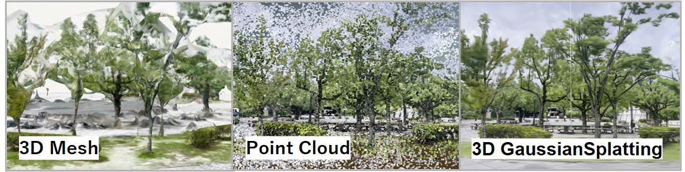
Furthermore, this study also focuses on the role of human language in aesthetic evaluation. In the field of architectural informatics, previous research has demonstrated through text-analysis techniques that even a single word can carry different qualitative meanings depending on the cognitive tendencies of an individual architect, quantitatively revealing that the conceptual components underlying the same term vary from person to person. Inspired by this insight, the present study explores the possibility of personalizing sensibility-related language on an individual, human-centered basis and incorporating such personalized linguistic impressions into design evaluation. To operationalize this idea, this study employs multimodal AI (CLIP), which embeds images and text in a shared semantic space. By linking aesthetic expressions such as “dense” and “refreshing” with visual data, CLIP enables these subjective linguistic impressions to be treated as quantitative indicators, allowing optimization that integrates both GVI-based metrics and human aesthetic judgment.
2. Methodology
2.1. Target Site
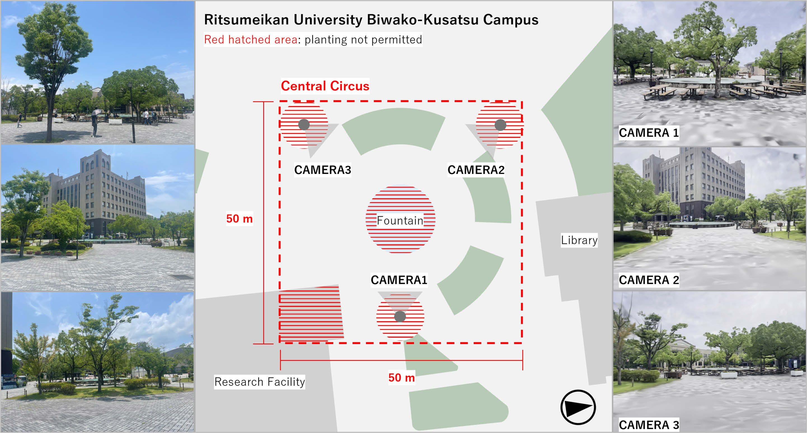
Ritsumeikan University Biwako–Kusatsu Campus’s Central Circus was selected as the study site for investigating tree placement. This outdoor space features several intersecting circulation paths surrounding a central fountain, making it suitable for assessing how tree placement influences visual experience.
2.2. Digital Twin Data Creation
A 10-minute site perimeter video was recorded, yielding 350 still images. 3DGS data were generated using Polycam, and after removing unnecessary splats, 778,019 points remained. High-quality 3D tree models (OBJ files) with detailed foliage and branches were used for placement evaluation.
The data were imported into Unity with the site center as the origin. Three cameras were placed at main circulation intersections for multi-viewpoint evaluation (Figure 2). Camera height was set at 1.6 m to represent eye level, with an 80° horizontal and 60° vertical field of view matching stable human vision. Evaluation was limited to three viewpoints for computational efficiency, though the 3DGS-based digital twin allows flexible addition or modification of viewpoints.
2.3. Optimization Framework Overview
The optimization workflow is illustrated in Figure 3. Tree placement optimization was performed using GA on a digital twin constructed with 3DGS. Each placement solution (individual) comprised position coordinates (x, z) and a y-axis rotation angle (deg) for each tree. GA explored optimal solutions through iterative selection, crossover, and mutation. Position coordinates were generated and updated within a 500×500 pixel mask that excluded buildings, the fountain, and areas within 5 m of each camera.
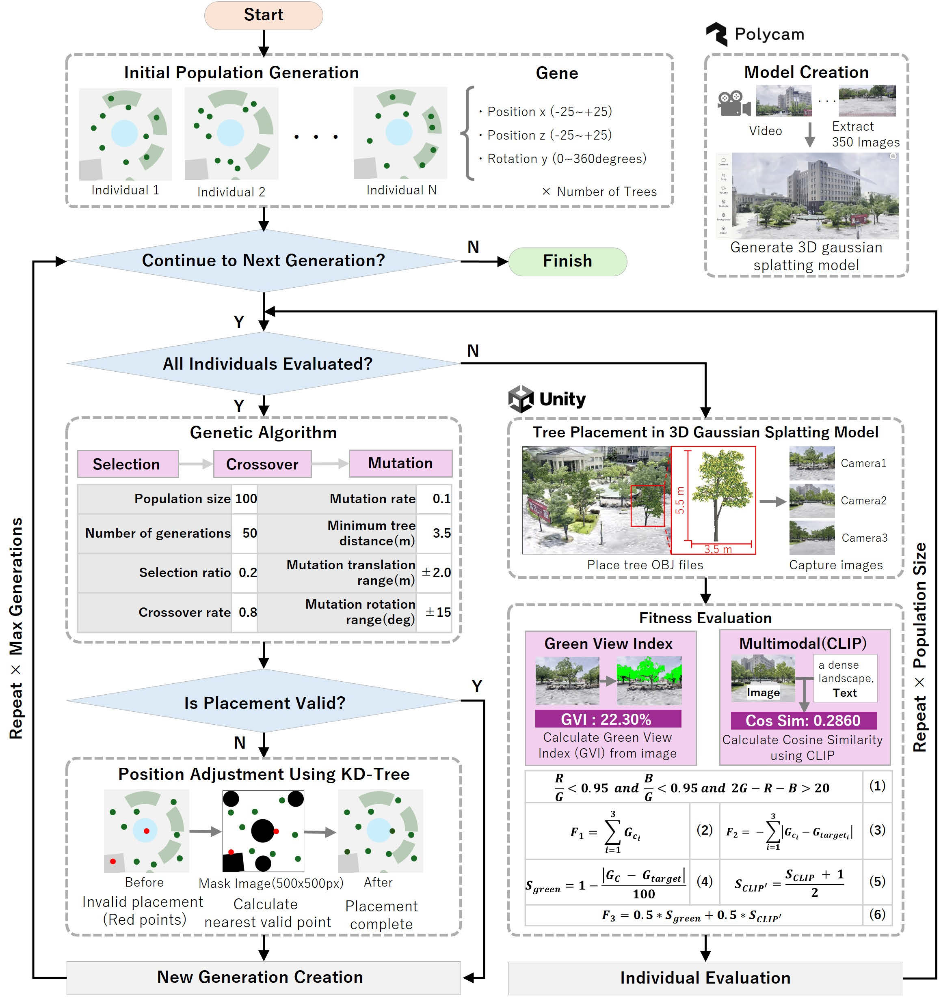
Coordinates falling outside valid regions after crossover or mutation were corrected to the nearest valid point using a KD-tree, ensuring solution validity. Placement constraints also prevented overlap between trees within the model range (width 3.5 m). Each individual was rendered in Unity, producing images from three viewpoints (480×640 px). Fitness was calculated from these images and used in generation updates.
Fitness was defined using two indicators: GVI and multimodal evaluation. Three optimization tasks were formulated, progressing from quantitative to aesthetic indicators.
2.3.1. Maximizing Green View Index
This task explores the theoretical upper limit of GVI achievable with a given number of trees, quantitatively capturing the landscape potential of the site. RGB image values are analyzed to extract “green” pixels based on threshold conditions from previous research. The ratio of green pixels to total pixels is then calculated (Figure 3 (1)), and an objective function F1 is defined to maximize the total GVI across all camera viewpoints (Figure 3 (2)). This task establishes a foundational step for verifying the validity of viewpoint-dependent evaluation using 3DGS and the effectiveness of GA.
2.3.2. Achieving Target GVI
Assuming practical design use, the objective function F2 minimizes the squared error between the target GVI (Gtargeti) for each viewpoint and the actual GVI (Gci) (Figure 3 (3)). This approach efficiently achieves target GVI by weighting viewpoint importance within a limited tree count.
2.3.3. Introduction of Multimodal Evaluation
In addition to GVI, we calculated cosine similarity between rendered images and the text prompts “a dense landscape” and “a refreshing landscape” using the CLIP model (ViT-B/16). These contrasting prompts represent aesthetic impressions of density and openness. Input images were resized to 224×224 pixels before analysis. The quantitative (Sgreen) and aesthetic (SCLIP) indicators were normalized and combined to define the objective function F3, which maximizes both (Figure 3 (4)–(6)). This task targets a single viewpoint (CAMERA 2) to verify the multimodal indicator’s effectiveness.
3. Results
3.1. Maximizing Green View Index
Figure 4 shows GVI transitions by camera for the 10-tree layout. Although final values varied among cameras, GVI reached 29.96% for CAMERA 1, 38.77% for CAMERA 2, and 35.01% for CAMERA 3, with an average of 36.84%.
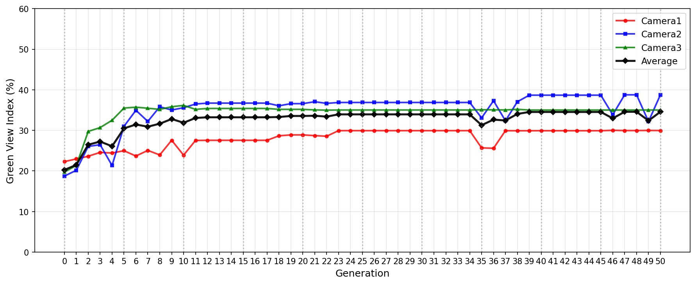
Figure 5 shows green area expansion and tree placement as the number of trees increased to 5, 10, and 15. As trees increased, vacant spaces within each field of view were efficiently filled with greenery, and placement patterns shifted accordingly. With only 5 trees, placement concentrated in positions most visible to each camera, while at 15 trees, trees appeared around the fountain and in areas seen by a single camera.
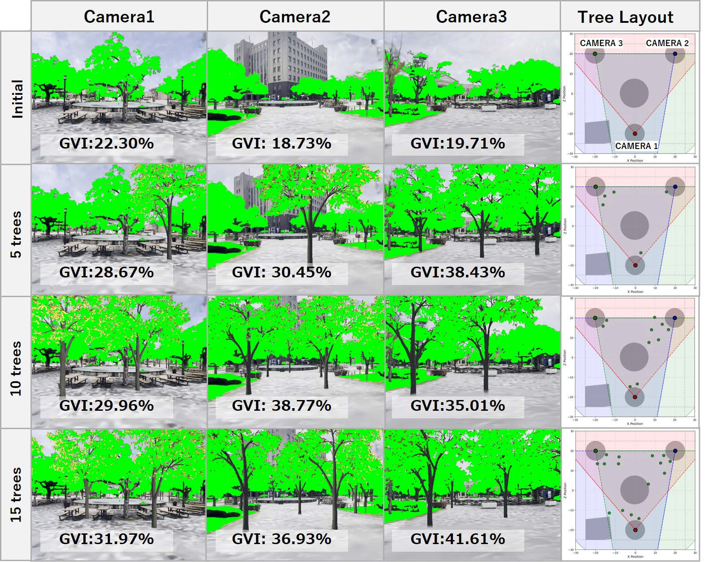
To verify this trend quantitatively, Table 1 presents the GVI changes as tree numbers increased from 5 to 30 in increments of 5. The GVI contribution rate (%/tree) was calculated by dividing GVI increase by the tree count (5), representing improvement per tree. Results show that beyond 20 trees, the contribution rate declined sharply, indicating limited gains from additional placement and nearing green area saturation.
| Number of Trees | 0 | 5 | 10 | 15 | 20 | 25 | 30 |
|---|---|---|---|---|---|---|---|
| CAMERA 1 | 22.30 | 28.67 | 29.96 | 31.97 | 30.35 | 31.37 | 31.57 |
| CAMERA 2 | 18.73 | 30.45 | 38.77 | 36.93 | 39.05 | 37.55 | 37.58 |
| CAMERA 3 | 19.71 | 38.43 | 35.01 | 41.61 | 41.05 | 41.90 | 39.32 |
| Average | 20.25 | 32.52 | 34.58 | 36.84 | 36.82 | 36.94 | 36.16 |
| Contribution (%/tree) | – | 2.454 | 0.412 | 0.452 | −0.004 | 0.024 | −0.156 |
3.2. Achieving Target Green View Index
Figure 6 shows the optimization results where target GVI values were set for each viewpoint (CAMERA 1: 25%, CAMERA 2: 30%, CAMERA 3: 40%).
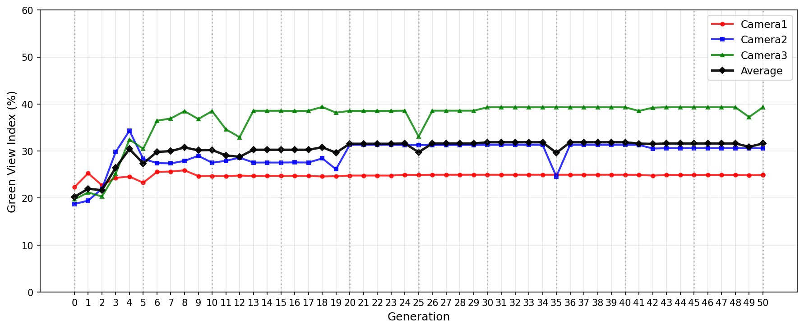
The GVI transition for each camera with 10 trees is illustrated in Figure 6. After optimization, CAMERA 1 achieved 24.92%, CAMERA 2 reached 30.59%, and CAMERA 3 reached 39.32%, all within 1% of target values. These findings suggest that, under the assumed site conditions and viewpoint configuration, about ten trees are sufficient to meet all target GVI values simultaneously.
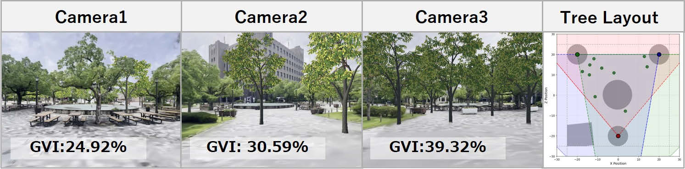
The final planting results (Figure 7) show that for CAMERA 1 and 2, greenery appears within the field of view while maintaining openness, whereas for CAMERA 3, it is concentrated in the foreground. These results demonstrate that the proposed method adjusts placement patterns by viewpoint, achieving viewpoint-dependent landscape design on digital twins even with the same number of trees.
3.3. Introduction of Multimodal Evaluation
3.3.1. Evaluation Using CLIP
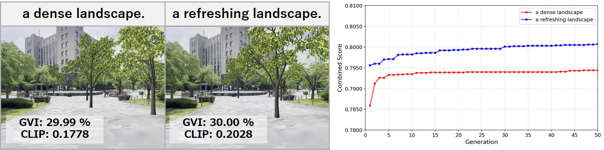
Beyond GVI, we conducted optimization integrating aesthetic evaluation with CLIP. Under a target GVI of 30% and 10 trees, CLIP cosine similarity for the text prompts “a dense landscape” and “a refreshing landscape” was added to the fitness function.
Figure 8 presents final placement results for each prompt and the transition of the combined score (F3) by generation. Both prompts met the target GVI, with the combined score increasing from about 0.7850 to 0.80 across generations. However, CLIP similarity remained low—0.1778 for “dense” and 0.2028 for “refreshing.” Visual inspection also showed little difference between the two results, indicating that the CLIP model pre-trained on general large-scale datasets could not effectively distinguish aesthetic expressions in landscape design.
3.3.2. Model Fine-tuning Using CLIP-LoRA
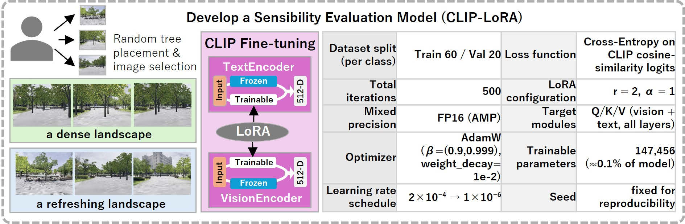
To address the challenge, we introduced fine-tuning with CLIP-LoRA. LoRA efficiently adapts pre-trained models through low-rank matrices. In this study, images generated from random tree placements in Unity were subjectively evaluated, with those showing open foregrounds labeled as “a refreshing landscape” and dense, passage-blocking configurations labeled as “a dense landscape.” LoRA fine-tuning was then conducted as a binary classification task to enlarge cosine similarity differences between the two classes. Figure 9 illustrates the CLIP-LoRA fine-tuning process.
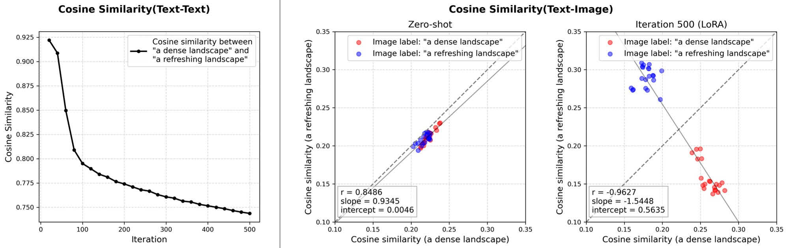
Figure 10 shows the evolution of text–text cosine similarity during fine-tuning and image–prompt similarity at Zero-Shot and 500 epochs. Text similarity decreased from 0.9214 to 0.7437, increasing the distance between “dense” and “refreshing” in the embedding space. While image–prompt similarities (validation) were aligned in Zero-Shot (r = 0.8486), fine-tuning shifted them to a strong negative correlation (r = −0.9627), positioning the prompts as contrasting concepts.
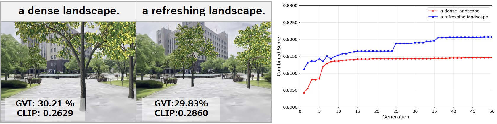
Figure 11 presents optimization results using the fine-tuned model. For both prompts, cosine similarity increased by approximately 0.08: “a dense landscape” produced clustered trees blocking passage, while “a refreshing landscape” formed open alignments along paths. Despite identical GVI, spatial configurations differed visibly by prompt, reflecting design intent. These findings suggest that LoRA fine-tuning, even with few samples, enables CLIP to learn landscape-specific aesthetic cues and supports human-centered placement optimization.
4. Conclusion and Discussion
This study proposed a human-centered landscape design method by optimizing tree placement with GA on digital twins built using 3DGS. 3DGS enabled viewpoint-dependent evaluation, reproducing visual characteristics crucial to human perception, including foliage overlap and transparency. Setting different target GVI values for multiple viewpoints allowed optimization reflecting visual importance.
In multimodal evaluation, aesthetic assessment with CLIP-LoRA complemented quantitative GVI indicators. LoRA fine-tuning with few samples produced distinct spatial configurations by prompt, even at the same GVI, showing design intent in placement patterns and separating opposing prompts in the embedding space. These findings demonstrate that aesthetic impressions such as “density” and “openness,” previously uncaptured by numerical optimization, can be quantified and incorporated into the design process.
This study has some limitations. Evaluation was restricted to three viewpoints, and walking paths and varied perspectives were not fully considered. Aesthetic assessment also reflected the author’s subjectivity, requiring validation across multiple designers. Nevertheless, the 3DGS environment enables easy addition of viewpoints, offering strong potential for future expansion.
Future work includes multi-viewpoint optimization addressing trade-offs among viewpoints, robustness testing through sensitivity analysis of viewpoint selection and GA parameters, and validating links between GVI and subjective impressions through user experiments. These developments aim to build a human-centered landscape design system combining aesthetic and quantitative evaluation.
References
- Aoki, Y. (1991). Evaluation methods for landscapes with greenery. Landscape Research, 16(3), 3–6.
- Estacio, I., Hadfi, R., Blanco, A., Ito, T., & Babaan, J. (2022). Optimization of tree positioning to maximize walking in urban outdoor spaces. Sustainable Cities and Society, 86(2), 104105.
- Jing, X., Liu, C., Li, J., Gao, W., & Fukuda, H. (2024). Effects of window green view index on stress recovery of college students. Buildings, 14(10), 3316.
- Kerbl, B., Kopanas, G., Leimkühler, T., & Drettakis, G. (2023). 3D Gaussian splatting for real-time radiance field rendering. ACM Transactions on Graphics (TOG), 42(4), Article 139.
- Kumakoshi, Y., Chan, S. Y., Koizumi, H., Li, J., & Yoshimura, Y. (2020). Standardized Green View Index and quantification of different metrics of urban green vegetation. Sustainability, 12(18), 7434.
- Lis, A., Pardela, Ł., & Iwankowski, P. (2019). Impact of vegetation on perceived safety and preference in city parks. Sustainability, 11(22), 6324.
- Luo, J., Liu, P., Xu, W., Zhao, T., & Biljecki, F. (2025). A perception-powered urban digital twin to support human-centered urban planning. Cities, 152, 105473.
- Ono, K., Tanikawa, N., & Yamada, S. (2025). The image of a famous architect as a whole as it appears in academic discourse. In CAADRIA 2025 (pp. 561–570).
- Ooka, R., Chen, H., & Kato, S. (2008). Study on optimum arrangement of trees for design of pleasant outdoor environment. Journal of Wind Engineering and Industrial Aerodynamics, 96, 1733–1748.
- Radford, A., Kim, J. W., Hallacy, C., et al. (2021). Learning transferable visual models from natural language supervision. ICML 2021, 139, 8748–8763.
- Song, C., Sang, J., Zhang, L., et al. (2022). Adaptiveness of RGB-image derived algorithms in the measurement of fractional vegetation coverage. BMC Bioinformatics, 23, Article 358.
- Tang, L., He, J., Peng, W., et al. (2023). Assessing the visibility of urban greenery using MLS LiDAR data. Landscape and Urban Planning, 232, 104662.
- Wang, Y., Wang, D., & Zhang, X. (2025). Higher greenery visibility is not necessarily better. Building and Environment, Article 113563.
- Zanella, M., & Ben Ayed, I. (2024). Low-rank few-shot adaptation of vision-language models. arXiv:2405.18541.
List of Figures
- Figure 1 — Comparison of 3D Gaussian Splatting with conventional methods
- Figure 2 — Target site, on-site photographs, and 3DGS images
- Figure 3 — Overview of the proposed method for tree placement optimization
- Figure 4 — Transition of GVI for each camera (10-tree layout)
- Figure 5 — Mask images of green areas and distribution of plantings
- Figure 6 — Transition of GVI toward target values for each camera
- Figure 7 — Images and distribution of plantings
- Figure 8 — Optimization results using CLIP
- Figure 9 — Dataset creation and CLIP-LoRA fine-tuning process
- Figure 10 — Text–text and image–prompt similarity shifts
- Figure 11 — Optimization results using CLIP-LoRA
Table 1 — Change in GVI and contribution rate with increasing number of trees